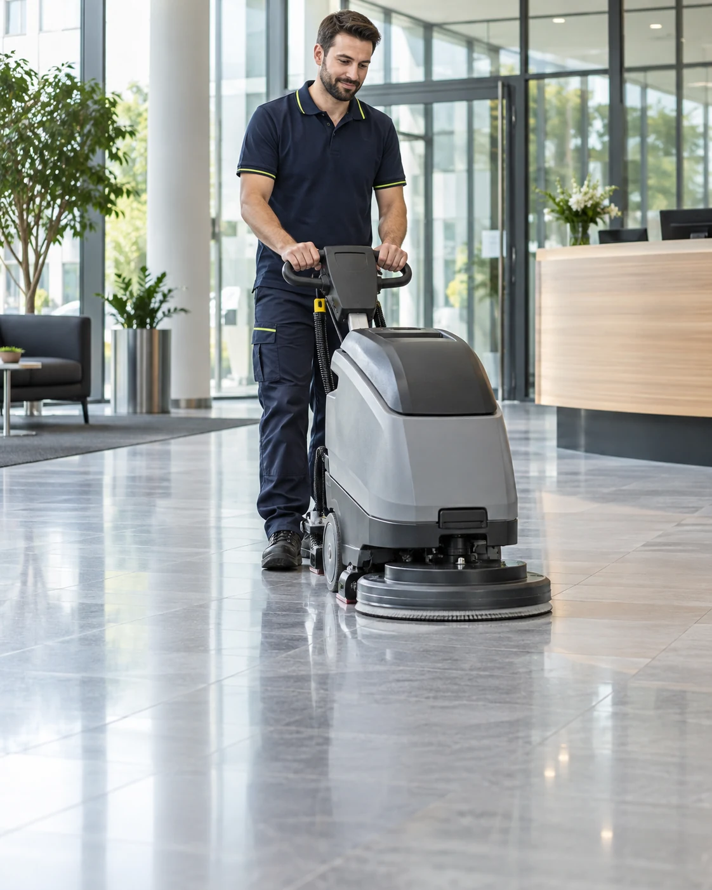
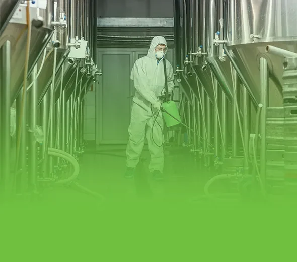
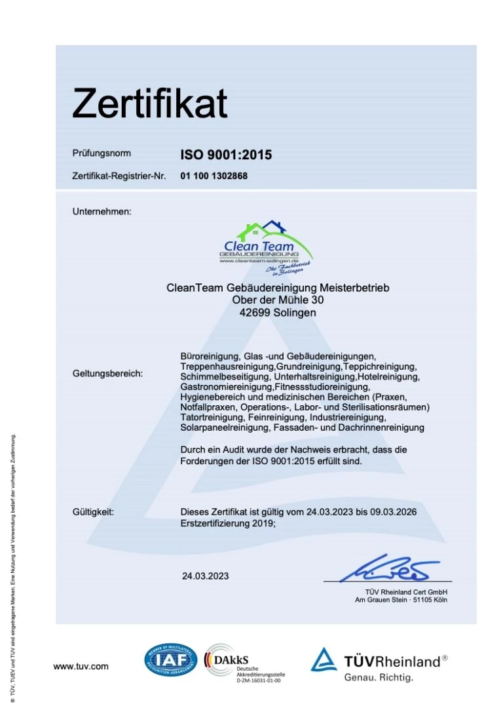

Büro- & Unterhaltsreinigung
Gepflegte Arbeitsplätze, saubere Sanitärbereiche und ein überzeugender erster Eindruck. Regelmäßig und passend zu Ihrem Betriebsablauf.
Reinigung anfragenCLEAN TEAM DORTMUND
Ihr zuverlässiger Meisterbetrieb für professionelle Gebäudereinigung. Für Arbeitsplätze, an denen sich Menschen wohlfühlen – und Unternehmen von ihrer besten Seite zeigen.

Jahre Erfahrung.
Ihr zuverlässiger Meisterbetrieb.
01 / UNSERE LEISTUNGEN
Ob tägliche Pflege oder gründlicher Neustart: Wir stimmen unsere Leistungen auf Ihre Räume, Ihre Abläufe und Ihren Bedarf ab.
Gepflegte Arbeitsplätze, saubere Sanitärbereiche und ein überzeugender erster Eindruck. Regelmäßig und passend zu Ihrem Betriebsablauf.
Reinigung anfragenKlare Sicht und gepflegte Glasflächen. Wir reinigen Fenster und Verglasungen sorgfältig – für helle, einladende Räume.
Reinigung anfragenIntensive Pflege für stark beanspruchte Böden und Oberflächen. Wir lösen hartnäckige Verschmutzungen und erhalten den Wert Ihres Objekts.
Reinigung anfragenSorgfalt für sensible Bereiche. Individuell abgestimmte Reinigungsabläufe für Praxen und medizinisch genutzte Räume.
Reinigung anfragenNach Neubau oder Renovierung sorgen wir für einen sauberen Abschluss – damit Ihre Räume bereit für die Nutzung sind.
Reinigung anfragenReinigungslösungen für gewerbliche Objekte jeder Größe. Effizient geplant und auf die Anforderungen Ihres Betriebs abgestimmt.
Reinigung anfragen02 / R?UME MIT ANSPRUCH
Jede Branche stellt andere Anforderungen an Sauberkeit. Wir betrachten die Nutzung Ihrer R?ume und entwickeln daraus ein passendes Reinigungskonzept.
Vom Empfang bis zum Besprechungsraum: Gepflegte Fl?chen schaffen eine angenehme Umgebung f?r Ihr Team und Ihre Besucher.
B?roreinigung anfragen ?Fenster und Glasfl?chen pr?gen das Erscheinungsbild Ihres Objekts. Regelm??ige Pflege sorgt f?r klare Sicht und einen einladenden Auftritt.
Glasreinigung anfragen ?
Viel genutzte R?ume brauchen durchdachte Pflege. Wir stimmen Verfahren und Reinigungsrhythmus auf Materialien und Beanspruchung ab.
Objektreinigung anfragen ?02 / ÜBER CLEAN TEAM
Sauberkeit mit System.
Qualität mit Verantwortung.
Seit über 30 Jahren steht Cleanteam für professionelle Gebäudereinigung und verlässliche Zusammenarbeit.
Als Meisterbetrieb betreuen wir Unternehmen verschiedenster Branchen. Unser Ziel geht über sichtbare Sauberkeit hinaus: Wir schaffen gepflegte Umgebungen, die das Wohlbefinden fördern und den Wert Ihrer Immobilie langfristig erhalten.
Dafür verbinden wir geschulte Mitarbeiter mit modernen Reinigungstechniken und umweltfreundlichen Reinigungsmitteln. Unsere Konzepte passen sich Ihrem Unternehmen an – flexibel, effizient und transparent.
Klare Abläufe, Pünktlichkeit und sorgfältige Arbeit.
Persönliche Betreuung und langfristige Zusammenarbeit.
Materialgerechte Pflege und verantwortungsvoller Ressourceneinsatz.
04 / SO ARBEITEN WIR ZUSAMMEN
Ein guter Reinigungsplan beginnt mit Zuh?ren. Gemeinsam kl?ren wir, was Ihr Objekt braucht und wie sich die Reinigung in Ihren Alltag einf?gt.
Sie erz?hlen uns von Ihrem Objekt, den Fl?chen und Ihren W?nschen. So schaffen wir die Grundlage f?r eine pers?nliche Beratung.
Wir kl?ren Reinigungsumfang, Rhythmus und Besonderheiten. Bei Bedarf stimmen wir eine Besichtigung des Objekts ab.
Auf dieser Basis erstellen wir ein individuelles Angebot. Leistungen und Rahmenbedingungen werden vor dem Start gemeinsam festgelegt.
Nach Ihrer Beauftragung setzen wir den vereinbarten Plan um. Ver?ndert sich Ihr Bedarf, sprechen wir die n?chsten Schritte mit Ihnen ab.
05 / PFLEGE MIT WEITBLICK
Professionelle Reinigung hilft, Oberfl?chen langfristig zu erhalten. Deshalb denken wir Materialpflege und verantwortungsvollen Ressourceneinsatz von Anfang an mit.
Passendes Konzept anfragen ?Glas, empfindliche Oberfl?chen und stark beanspruchte B?den brauchen unterschiedliche Verfahren. Wir stimmen die Reinigung auf das jeweilige Material ab.
Moderne Techniken und passend dosierte Reinigungsmittel unterst?tzen gr?ndliche Ergebnisse und einen bewussten Umgang mit Ressourcen.
Ein abgestimmter Reinigungsrhythmus h?lt Ihre R?ume gepflegt und hilft, hartn?ckigen Verschmutzungen rechtzeitig zu begegnen.

03 / UNSER QUALITÄTSANSPRUCH
Qualität entsteht durch Sorgfalt – und durch Abläufe, die jeden Tag funktionieren.
Wir legen Wert auf strukturierte Prozesse und konsequentes Qualitätsmanagement. Das hier gezeigte TÜV-Rheinland-Zertifikat dokumentiert die Prüfung unseres Qualitätsmanagements nach ISO 9001:2015.
07 / H?UFIGE FRAGEN
Hier finden Sie Antworten auf h?ufige Fragen rund um Ihre Reinigungsanfrage.
Pers?nlich nachfragen ?Wir bieten B?ro- und Unterhaltsreinigung, Glas- und Fensterreinigung, Grundreinigung, Praxisreinigung, Bauendreinigung sowie Gewerbe- und Industriereinigung an. Die Leistungen werden passend zu Ihrem Objekt zusammengestellt.
Leistungen im ?berblick ?Unser Angebot richtet sich an Unternehmen in Dortmund und Umgebung. Nennen Sie uns bei Ihrer Anfrage die Adresse oder Postleitzahl Ihres Objekts, damit wir den konkreten Einsatzort mit Ihnen abstimmen k?nnen.
Der Preis richtet sich unter anderem nach Fl?che, Art der Nutzung, Verschmutzung, gew?nschten Leistungen und Reinigungsh?ufigkeit. Deshalb erstellen wir ein individuelles Angebot auf Grundlage Ihres Bedarfs.
Hilfreich sind der Standort, die Art des Objekts, die ungef?hre Fl?che und der gew?nschte Reinigungsrhythmus. Teilen Sie uns auch Besonderheiten wie empfindliche B?den, sensible R?ume oder bestimmte Zeitfenster mit.
Jetzt eine Anfrage vorbereiten ?Wir stimmen die Reinigungszeiten mit Ihrem Betriebsablauf ab. Nennen Sie uns Ihre bevorzugten Zeitfenster. Welche Termine m?glich sind, kl?ren wir gemeinsam vor der Beauftragung.
Ja. Neben regelm??iger Unterhaltsreinigung k?nnen Sie auch einzelne Leistungen wie eine Grund- oder Bauendreinigung anfragen. Umfang und Termin werden individuell vereinbart.
Wir arbeiten mit modernen Reinigungstechniken und umweltfreundlichen Reinigungsmitteln. Entscheidend sind dabei die Eignung f?r die jeweilige Oberfl?che, eine passende Dosierung und ein auf den Bedarf abgestimmter Ablauf.
Tragen Sie Ihre Angaben ein und w?hlen Sie ?Anfrage per E-Mail vorbereiten?. Das Formular ?ffnet Ihr E-Mail-Programm mit der vorbereiteten Nachricht. Bitte senden Sie diese dort selbst ab. Alternativ erreichen Sie uns direkt unter 0231 22614620 oder info@cleanteam-group.com.
08 / KONTAKT
Sie suchen einen zuverlässigen Reinigungspartner in Dortmund? Erzählen Sie uns, was Sie brauchen. Gemeinsam finden wir die passende Lösung.
RUFEN SIE UNS AN0231 22614620 info@cleanteam-group.comPersönlich. Unverbindlich. Auf Ihr Objekt abgestimmt.